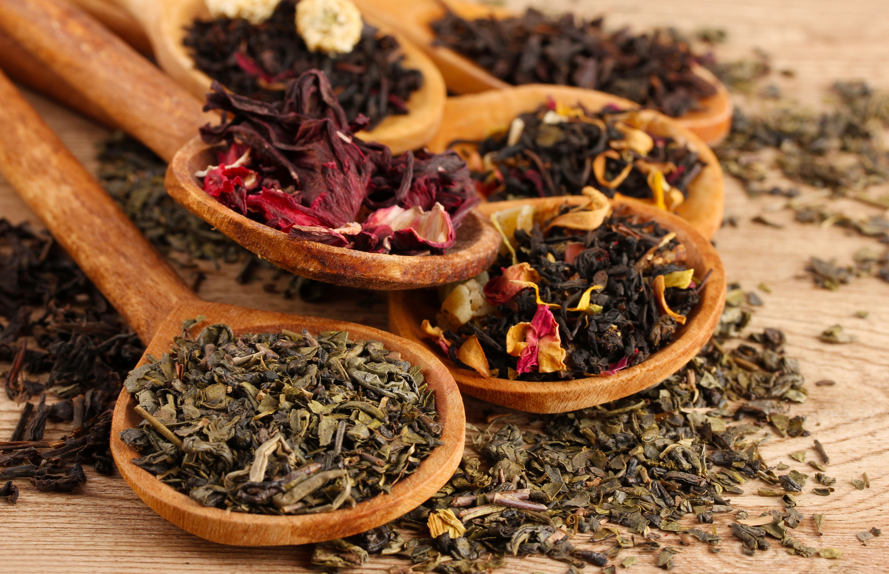

Tea is a popular beverage in the world, It can be drank during the moring or even as pastime. Dried tea has a lots of variety from Floral to Leaves, not just light or bitter. Each variant offers a diffrent aroma, taste, uses and benefits.

Tea making is a simple preparation of pouring hot water into the dried leaves of your choice, be it herbal tea or tea leaves.
Tea vs Herbal Tea
Tea came from Camelliea sinensis, found in tropical climates. Every true tea, white, green, oolong, black, and pu-erh, comes from that single plant. Their difference in taste comes from their processing and how they oxidize. Their naming convention is based on where they were grown
Herbal tea on the other hand came from anything edible. Steeping leaves, berries, spices, herbs or vegetable in boiling water yields "tea" indead, these kinds of infusions or tisanes, as they are more approprietly called were also central to the start of curative medicine tousans of years ago.
Different variants of Tea
True tea has 5 main variants and each can be used in diffrent ways besides just drinking.
-
White Tea
White tea is made from steaming and drying buds and immature leaves from the tea tree. Ofthen labeled using the word "silver", this designation refers to the white hairs that are present on the plant as it starts to bloom.
Preparing loose white tea leaves you generally need to steep it around 3 to 5 minutes in near boiling water, depending to your desired taste and White tea usually has Low to moderate caffeine content.
White tea is rare, and its profile is famously light and delicate. Beyond the teacup, its high concentration of antioxidants makes it a prized ingredient in skincare and cosmetics, while its subtle flavor and aroma lend themselves beautifully to culinary arts, mixology, and fine fragrances.
-
Green Tea
Green tea is made from shoots of the tea tree, and it goes through 3 stages, steaming, rollingm, and drying or firing. After being heated in a steamer the leaves are rolled, then dried or fired. The leaves stay green after this kind of processing.
Preparing loose green tea leaves requires you to steep for 2 to 3 minutes, if you steep it for less time, the tea will have more stimulating effect. Steeping it for more time will help you relax, its unoxidized nature results in having a more "raw" taste. Green tea has moderate ammounts of caffeine.
Unoxidized and rich in active compounds like EGCG, green tea is great outside the cup as it is inside. Its high anti-inflammatory properties and natural chlorophyll make it a staple in most acne skincare, while its colorful and earthy flavor lifts everything from savory dishes to gourmet desserts.
-
Oolong Tea
Oolong tea has to go through 3 stages to become oolong, Fermentation, Rolling, and Drying or Firing. The leaves are dark brownish green after its processing and they are either long and curled shapped or are rolled into little balls. Oolong is often labeled roasted or light, and it can be roasted and aged more than once.
Preparing loose oolong tea leaves is more demanding as to unlock its true flavor you sometimes need precise measurement of the water before steeping, typically around 88°C to 93°C, just below boiling point. The color of the oolong also matter as it determines how long you steep them in the water, Light greenish lean towards the 2 minute mark, while dark roasted oolongs taste better closer to 3 minutes. Oolong tea has Moderate to high ammounts of caffeine.
Partially oxidized and complex, oolong tea is the bridge between green and black teas. Its unique concentration of polymerized polyphenols makes it a valuable asset for metabolic and skin health, while its roasted, floral flavor notes lend unique depth to artisanal mixology, slow-poached meats, and luxury fragrances.
-
Black Tea
Black tea goes through 4 stages of manufacturing, Withering, Rolling, Fermentation, and Drying or Firing. The leaves are dark due to its more harsh process, but it is also what makes it flavor profile more intense.
Prepaing loose black tea leaves is more open, the tempareture needed to steep it is higher to disolve its essential oils and tannins. For about 3 minutes, covered, it will give a light, smooth cup. For 4 to 5 minutes, covered, It has a Bold, full bodided brew. Steeping it longer will release more tannins, which is responsible in making drinks more bitter. Similar to Oolong tea, Black tea has Moderate to high ammounts of caffeine.
Fully oxidized and rich in robust tannins, black tea is a heavy hitter both in and out of the teacup. Its high caffeine and antioxidant content make it a natural remedy for soothing tired eyes and tightening skin, while its bold, malty profile provides a dark, natural dye for textiles and a savory, deeply aromatic base for marinades and broths.
-
Pu-erh Tea
Pu-erh tea is a unique class of post-fermented dark tea produced exclusively in the Yunnan province of southwestern China. Unlike standard green, oolong, or black teas—whose chemical profiles are set once dried—Pu-erh relies on living microflora and natural enzymes to ferment and evolve over years or decades.
Uniquely fermented and microbial-rich, Pu-erh tea is as renowned for its digestive health benefits as it is for its deep, evolving flavor. Its smooth, earthy profile makes it a traditional pairing for heavy meals and a rich base for savory braises, while its dark, natural pigments and active compounds lend value to health supplements and artisanal dyeing. This Quality labels Pu-erh tea as "The Wine of Teas".
Caffeine content of Tea Compared to Coffee
Comparing Tea to Coffee is like Comparing Coke to Coke light, they are similar, but the other has a harder hit. Coffee has roughly double to triple caffeine content compared to Tea, but raw tea leaves apparently contain higher caffeine concentration by weight before being brewd
A key difference in the two comes down to their brewing extraction, Coffee grounds are brewed with hotter water and a higher solid-to-water ratio, extracting significantly more caffeine into the liquid than delicate tea leaves yield.
There is also called "The jitter factor" where Tea contains L-theanine, an amino acid that promotes relaxation and slows the ability of the body to extract caffeine, it allows the body to extract caffeine slowly unlike coffee where it causes a spike on energy resulting in a crash after the effects wear off.